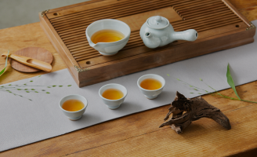
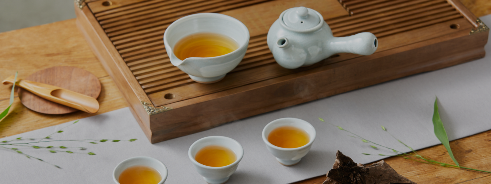

Some herbs can help remove various harmful chemicals from the body. These ingredients help remove toxins from the body directly by attaching themselves to harmful heavy metals and facilitating their excretion through the digestive system. Herbs such as ginger, dandelion, burdock, licorice root contribute to detoxification.
Using HANCHA for a refreshing and restorative cup of tea can be a great way to support the recovery of your tired body.
HANCHA Usage for A
Tired Body


All ingredients have various functions and benefits. Tea, too, has functional characteristics based on the ingredients it contains, and by selecting the right tea for your purpose, you can enjoy a healthier beverage.
HANCHA is crafted using traditional Korean medicinal herbs, known for their health benefits. The selection of ingredients is based on a wealth of accumulated knowledge about their functional properties, making HANCHA a reliable choice for health-conscious tea drinkers.


-
Ingredients rich in antioxidants and vitamin C can be helpful for colds.
Various herbs have properties to either reduce body temperature or provide essential minerals and vitamin C to nourish your body. Herbs: elderflower, licorice, cinnamon, ginger, rose hips, rosemary, lemon verbena.

-
Aromatics have a calming effect on the mind. Fragrance plays a significant role in relieving stress, anxiety, and insomnia. Some aromatic herbs can help soothe your senses and alleviate stress. Herbs: chamomile, lavender, lemon verbena, basil.


-
Herbs known for functions such as detoxification and anti-inflammatory effects are said to be beneficial for digestion. This herb helps soothe the stomach and is believed to assist in promoting restful sleep when taken after an evening meal. Herbs: ginger, licorice root, cinnamon


4. Detoxification